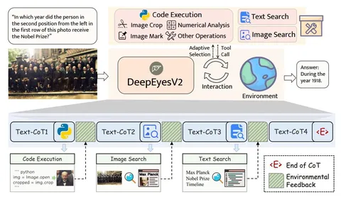
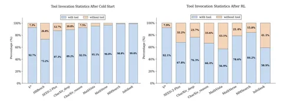

В последний год в статьях всё чаще затрагивают идею агентного зрения, где VLM используют в решении задач не только язык, но и создают новые изображения с помощью внешних инструментов.
Сегодня разбираем DeepEyesV2 — открытый бейзлайн мультимодального агентного ризонера. Авторы собирают его на основе опенсорсных данных в стадиях ColdStart и RL, и показывают рост по многим бенчмаркам. Бонусом — делятся данными неудачных подходов и проводят интересные ablation studies.
RL без Cold Start
В предыдущей DeepEyesV1 авторы через RL обучали модель использовать специализированные инструменты — функции кропа картинок и зума. В V2 попробовали тот же подход на сложных инструментах (Python и картиночном поиске) — и получили негативный результат.
Оказалось, что даже если до RL модель (в данном случае Qwen-2.5VL-7B) выполняла вызовы, после — разучивалась это делать (!). Причина в форматных ошибках: вызовы сложных инструментов требуют точного синтаксиса, в отсутствие которого модель получала штрафы от реворда форматирования. А при добавлении реворда на вызов, она обучалась хакать его — генерировать бессмысленные (но гарантированно корректные) вызовы Python, вроде:
# There is no need to write code{}
Авторы пришли к выводу, что для сложных инструментов необходимо сначала показать модели примеры правильных вызовов во время Cold Start.
Сбор данных и обучение
Авторы постарались выжать из опенсорсных данных сложный и разнообразный датасет. Собрав наборы вопросов, картинок и ответов, они выфильтровывают примеры, которые Qwen-2.5.VL-7B уже может решить без ошибок. На оставшихся примерах в качестве ground-truth собирают траектории фронтирных моделей. Для определения сложности семплов используют pass@k как с инструментами, так и без них, руководствуясь следующей логикой:
В Cold Start авторы используют стандартный NLL, а в RL — DAPO с двумя ревордами: форматным (правильное форматирование CoT и вызова тулов) и на результат.
Результаты
Замеры показывают хороший рост на бенчмарках, особенно на CharXiv Reasoning (вопросы по инфографике), MathVerse (задачки по математике) и HRBench (поиск объектов на картинках с высоким разрешением) — около +5%, выше предыдущей версии и схожих конкурентов. С другой стороны, при сравнении с фронтирными моделями или топовыми китайскими VLM, разрыв остаётся огромным — в десятки процентов, а главный сценарий использования Python — Numerical Analysis (то есть продвинутый калькулятор).
Аблейшены
В статье есть ряд любопытных замеров. Например разбивка обучающих данных по категориям Perception/Reasoning/Search с тренировкой по разным сплитам. Интересный результат — на второй картинке: после RL количество вызовов становится меньше на тех же бенчмарках по сравнению с ColdStart. Это показывает, что на RL модель обучается выбирать инструмент «по сложности», а не детерминировано вызывать Python в любой ситуации.
В итоге у авторов получилась хорошая база для дальнейших экспериментов на разных стадиях с открытыми данными, протоколом обучения и весами моделей.
Разбор подготовил
CV Time

